来源：https://x0vg1nkm75f.feishu.cn/docx/CL71dvLD9oML1fxTcBDcBeHXnCb
1.打开飞书，在左侧导航栏中点击知识库（我的是拖入到“更多”里了，如果大家找不到在上方搜索框里搜索知识库），再点击右上角的新建知识库
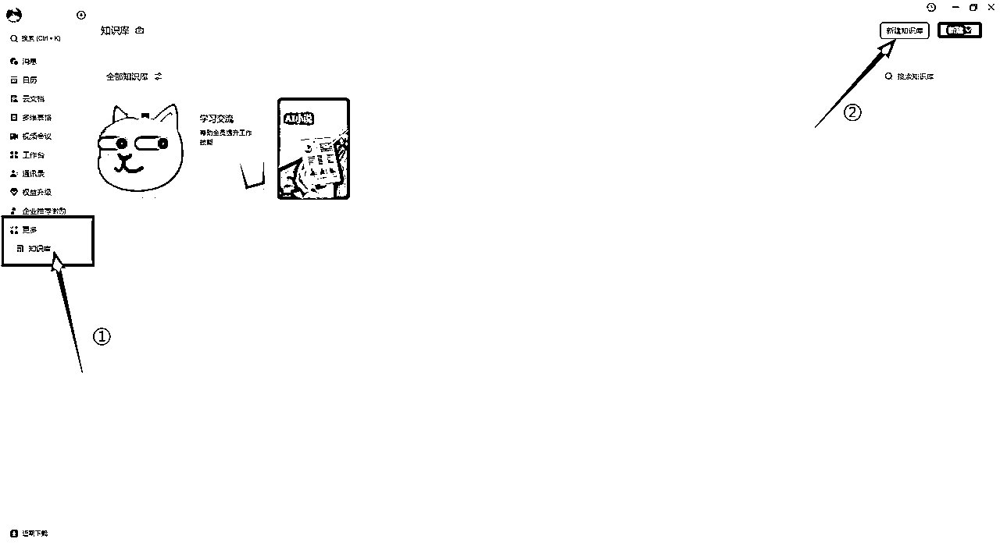
有圈友表示找不到知识库入口，最简单直接的位置就是飞书PC客户端——云文档——知识库（下图所示）
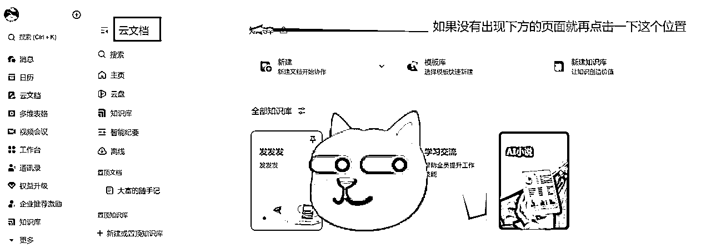
2.我们可以选择飞书提供的模板进行创建，也可以自己创建空白知识库。选择好后，点击右下角的“下一步”
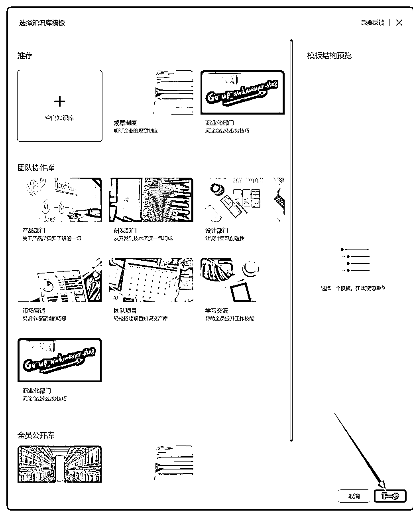
3.设置好名称、简介、可见范围后，点击右下角创建。
完成以上步骤后，你就成为了这个知识库的管理员。
请直接看图：
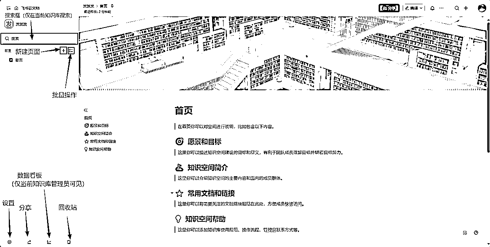
创建知识库后，如果我们需要添加其他页面，点击左侧“+”后，就有三种添加页面的方式：
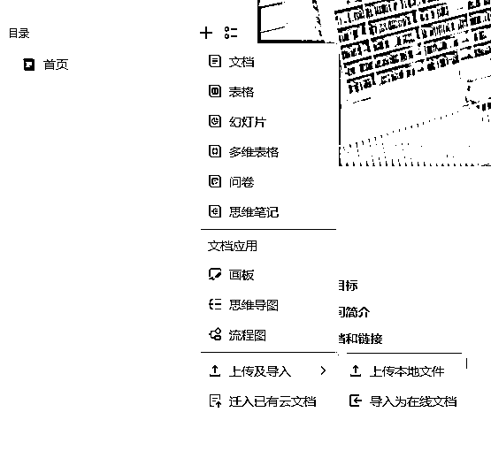
在“+”菜单里选择所需类型：文档、表格、幻灯片、多维表格、问卷、思维笔记、画板、思维导图、流程图。
进入上传及导入：
选择 迁入已有云文档，搜索并勾选要迁入的文档，一次最多 20 个，右下角会显示迁入进度与结果。
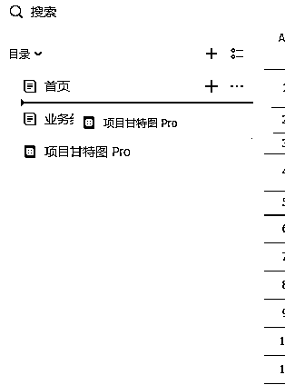
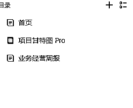
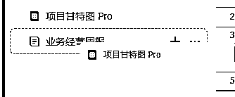
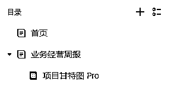
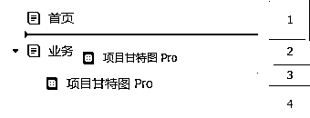
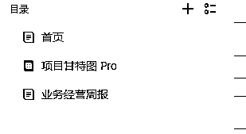
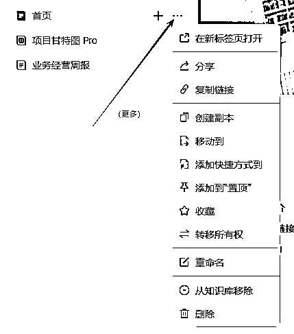
批量操作：点击多选或按住 Shift 逐个点选页面标题，即可对创建副本 / 移动 / 添加快捷方式等进行批量处理。
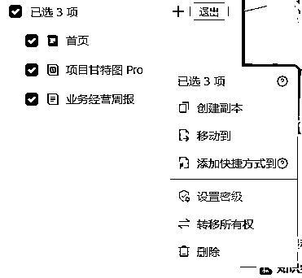
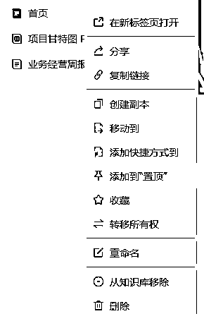
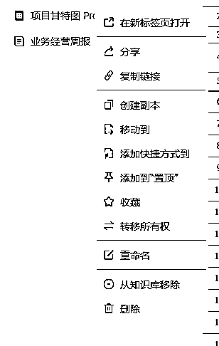
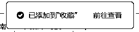
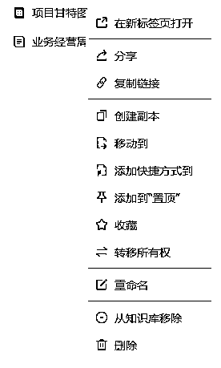
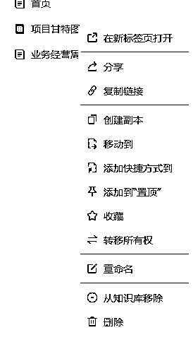
完成前面的步骤后，就可以把整个知识库或其中的页面共享给他人阅读/协作。
方式 A｜添加管理员 / 成员（统一授权整库）
进入知识库 设置 → 成员设置，按需添加管理员、可编辑成员、可阅读成员；创建人默认是管理员。
被添加的成员会在“知识库”列表中看到该库。
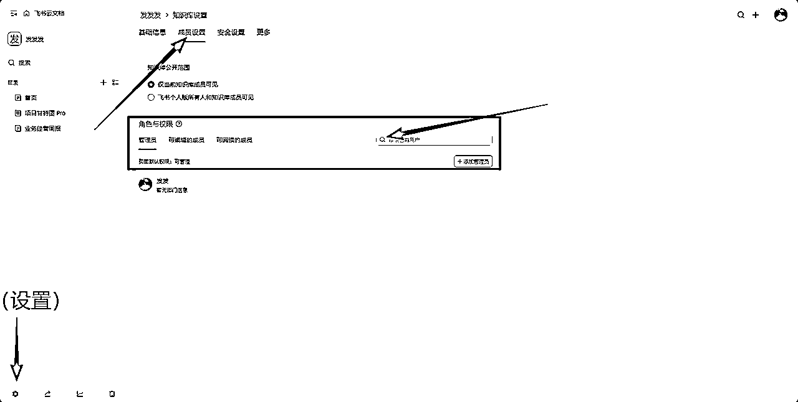
方式 B｜设为组织内公开
在创建时将可见范围切为“"XXXX"所有人公开可见”，或在设置 > 成员设置 > 知识库公开范围，知识库会出现在组织内所有人的知识库主页列表；变更公开范围后 1 小时内不可再次修改。
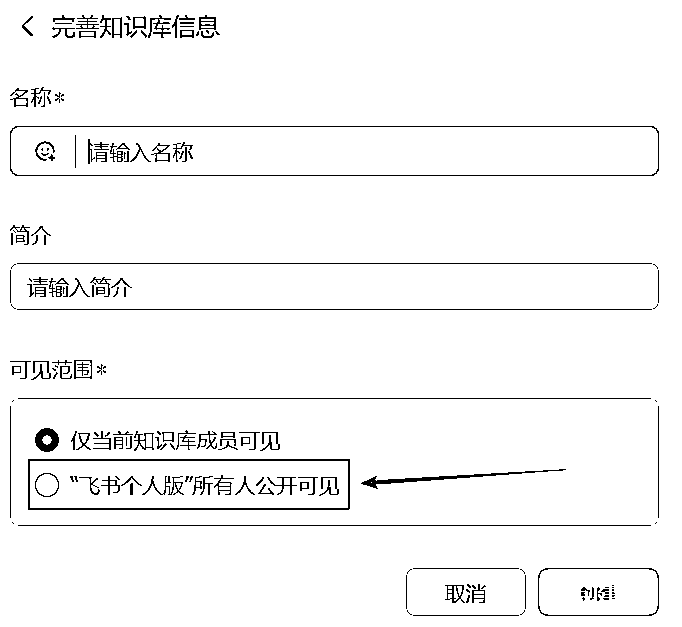
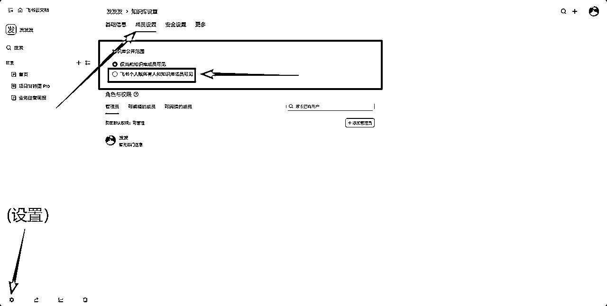
方式 C｜发布到互联网（对外链接）
点击左下角分享按钮，开启“将知识库发布到互联网”，复制链接发给外部用户即可访问。开启后，目录第一级页面的链接分享范围会自动改为“互联网获得链接的人—可阅读”，子页面默认继承；关闭开关则外部访问失效。
外部用户通过链接，无需登录飞书账号即可在网页上查看你分享的知识库。
满足密级限制或已停止继承父级权限的页面不会自动开放，需单独调整。
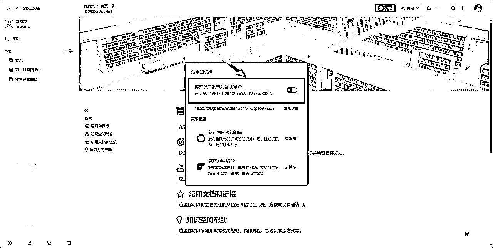
小提示：任何人打开知识库链接后，只能看到自己有阅读权限的页面；必要时仍需给对方开通页面层面的权限。
方式 1｜邀请协作者（指定人）
在页面右上角点分享，输入人名/群组，设置可管理 / 可编辑 / 可阅读。根据需要勾选/不勾选“允许协作者同时访问子页面”。
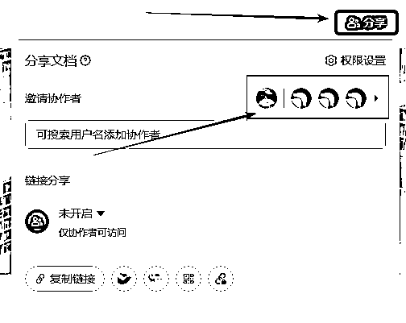
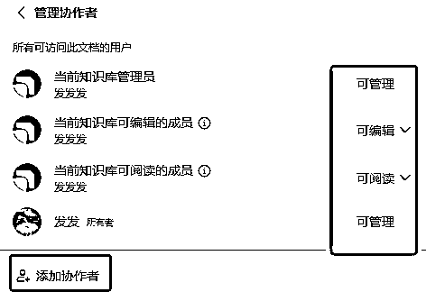
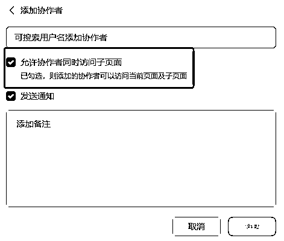
方式 2｜链接分享（全网可见）
在分享 → 链接分享选择“互联网获得链接的人”，再选择作用范围：仅当前页面或当前页面及子页面；设置为可阅读/可编辑并复制链接。仅拥有该页面可管理权限的用户可修改链接分享范围。
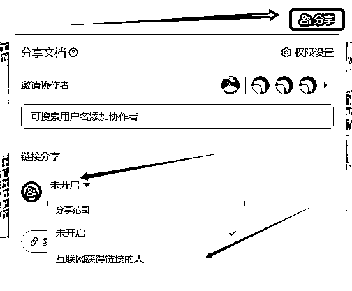
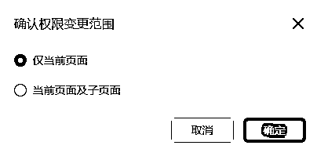
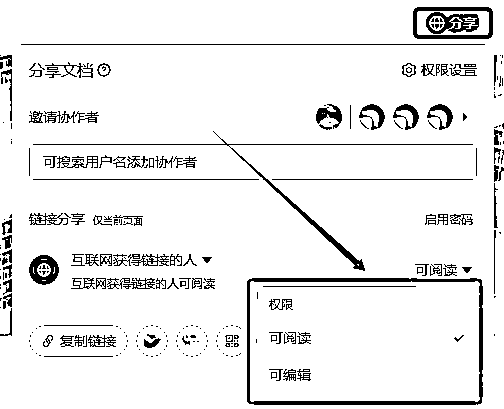
继承规则要点：父级页面的分享与权限会影响子页面；协作者列表里能分别看到“当前页面及子页面”与“仅当前页面”两类协作者。
受限情形：若安全设置不允许对外分享，则任何页面都无法开启对外分享；单页面权限设置不得超出知识库安全设置的允许范围。
谁是管理员？
新建者自动成为管理员，并可继续添加其他管理员与成员。
管理入口在哪里？
进入知识库左下角设置，可修改基础信息 / 成员设置 / 安全设置，以及在“更多”中执行删除知识库等操作；设置入口仅对管理员可见。
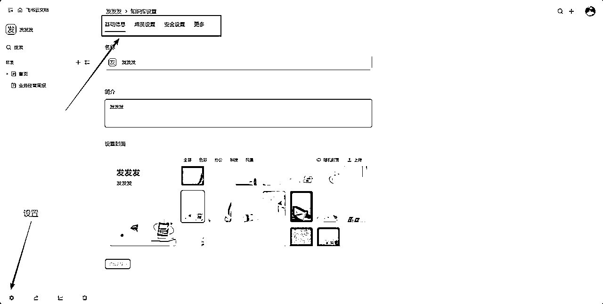
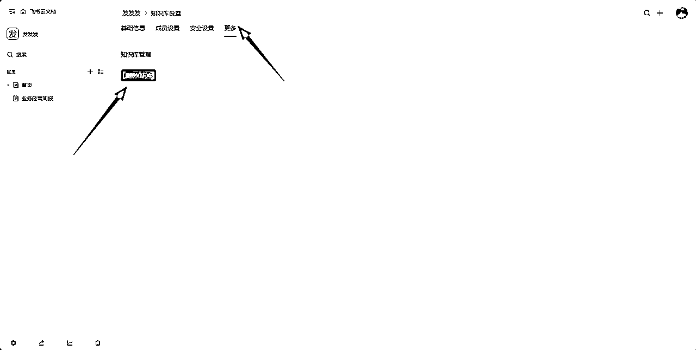
允许/不允许页面对外分享。若设为“不允许”，将关闭已有对外分享、隐藏“互联网获得链接的人（可阅读/可编辑）”选项，且无法添加外部协作者。
可选“管理员和成员”或“仅管理员”。选“仅管理员”时，其他成员不能创建/移动/删除一级页面。
控制谁可点击左下角“知识库信息”查看封面、简介、管理员名单。
是否允许仅可阅读的用户获取内容。设为“不允许”后，相应页面设置里不可再选可阅读用户。
是否允许仅可阅读的用户发表评论（含划词评论）。
规定谁可以移动或删除非一级页面。
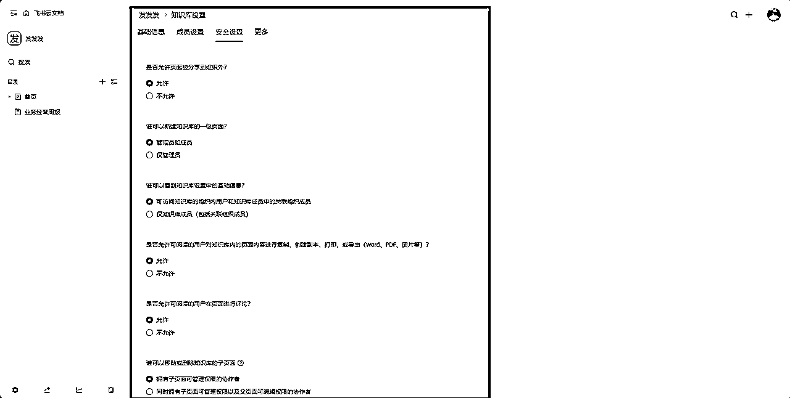
提示：安全设置由当前知识库管理员在“设置 → 安全设置”统一调整。
若你的版本支持，管理员可查看内容访问量、内容新增量等使用数据。
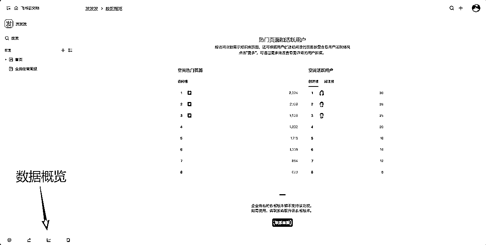
在 设置 → 更多 → 删除知识库 执行。删除后，知识库及其中所有页面一并删除；如需恢复，一般需由管理员在后台处理，且仅支持 90 天内删除的知识库（个人版删除后无法恢复）。
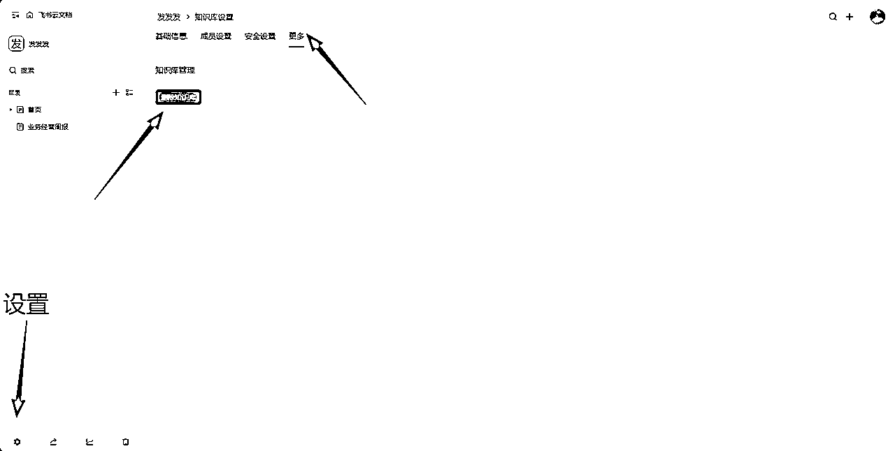